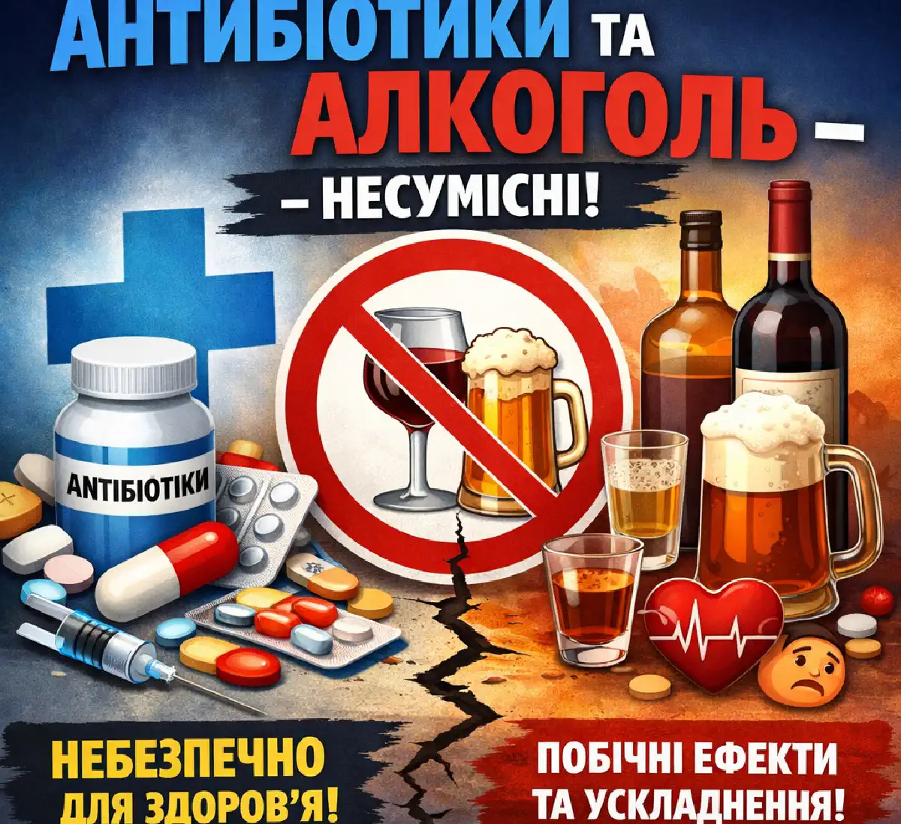

+38(068) 79 72 782
+38(068) 79 72 782Чому не можна пити алкоголь при прийомі антибіотиків
Реальний ризик смерті при поєднанні алкоголю та ліків


Безкоштовна консультація, працюємо цілодобово 24/7
Реальний ризик смерті при поєднанні алкоголю та ліків

Поєднання алкоголю та антибіотиків — одна з найчастіших помилок під час лікування. Багато пацієнтів вважають, що «один келих» не вплине на результат, однак з точки зору нарколога це небезпечна помилка. Алкоголь втручається в роботу організму, знижує ефективність терапії та підвищує ризик ускладнень. Антибіотики призначаються для пригнічення бактеріальної інфекції, і для їх нормальної дії необхідна стабільна концентрація препарату в крові. Алкоголь порушує ці процеси, перевантажує печінку і може призвести до того, що лікування виявиться неефективним або навіть небезпечним. Додатково слід враховувати, що етанол впливає не лише на сам препарат, а й на загальний стан організму. На фоні вживання алкоголю знижується активність імунної системи, погіршується здатність організму боротися з інфекцією, сповільнюються процеси відновлення тканин. У результаті навіть при правильно підібраному антибіотику одужання може затягнутися, а ризик ускладнень зростає.
Окремо варто зазначити вплив на шлунково-кишковий тракт. І антибіотики, і алкоголь можуть подразнювати слизову оболонку шлунка та кишечника. При їх поєднанні підвищується ризик розвитку гастриту, диспепсичних розладів, болю в животі та порушення мікрофлори. Це не лише погіршує переносимість лікування, але й може потребувати додаткової терапії. Крім того, при одночасному прийомі алкоголю та антибіотиків зростає ймовірність побічних ефектів. Навіть якщо раніше препарат переносився добре, на фоні етанолу можуть з’явитися нові небажані реакції — від легкого нездужання до вираженої інтоксикації.
Вплив алкоголю на лікування може бути непередбачуваним. У різних людей реакція організму відрізняється, і неможливо заздалегідь точно визначити, як саме відреагує організм на поєднання з конкретним препаратом. Саме тому лікарі рекомендують повністю виключити алкоголь на весь період терапії та на деякий час після її завершення. Відмова від алкоголю під час прийому антибіотиків — це не формальна рекомендація, а важлива умова ефективного і безпечного лікування. Дотримання цього правила допомагає швидше впоратися з інфекцією, знизити навантаження на організм і уникнути серйозних ускладнень.
Основна причина заборони — несумісність процесів метаболізму. Печінка одночасно переробляє і ліки, і етанол, що призводить до перевантаження та порушення нормального функціонування організму. Крім того, алкоголь: знижує імунну відповідь, порушує всмоктування препарату, посилює побічні ефекти, уповільнює одужання.
Навіть невеликі дози спиртного можуть негативно вплинути на лікування. При перевантаженні печінки змінюється активність ферментів, відповідальних за переробку лікарських речовин. Це може призвести до того, що антибіотик або не досягає необхідної концентрації в крові, або, навпаки, накопичується в організмі та викликає токсичний вплив. Обидва варіанти небезпечні: у першому випадку лікування стає неефективним, у другому — зростає ризик побічних ефектів і ускладнень. Алкоголь також впливає на процеси всмоктування в шлунково-кишковому тракті. Під його впливом порушується робота слизової оболонки, змінюється кислотність і моторика, що може погіршувати надходження препарату в кров. У результаті антибіотик не реалізує свій терапевтичний ефект у повній мірі.
Зниження імунної відповіді — ще один важливий фактор. Під час інфекції організм потребує максимальної мобілізації захисних сил, однак алкоголь пригнічує активність імунних клітин. Це призводить до того, що навіть за наявності антибіотика організм гірше справляється з інфекцією, а період одужання затягується. Навіть невеликі дози алкоголю здатні порушити хід лікування та знизити його ефективність. Повна відмова від спиртного на період прийому антибіотиків — це необхідна умова для безпечного і успішного відновлення організму.
Наслідки можуть бути різними — від зниження ефективності лікування до серйозної інтоксикації. Найбільш часті реакції: слабкість, запаморочення; нудота і блювання; стрибки тиску; прискорене серцебиття; погіршення загального стану. Також підвищується ризик того, що інфекція не буде повністю усунена і перейде в хронічну форму.
Крім перелічених симптомів, можуть спостерігатися і більш виражені порушення з боку різних систем організму. Наприклад, можливі проблеми з координацією, виражена сонливість або, навпаки, збудження, що пов’язано з впливом алкоголю на центральну нервову систему. Це особливо небезпечно при одночасному прийомі препаратів, які самі по собі можуть викликати седативний ефект. Серцево-судинна система також може реагувати на таке поєднання. У пацієнтів можуть виникати перепади артеріального тиску, відчуття перебоїв у роботі серця, посилене серцебиття. Це особливо небезпечно для людей із хронічними захворюваннями серця і судин.
Такі реакції можуть виникнути навіть у раніше здорової людини, особливо якщо організм ослаблений інфекцією. Чим тяжче захворювання і чим сильніша інтоксикація, тим вищий ризик ускладнень при вживанні алкоголю. Крім того, при порушенні схеми лікування зростає ймовірність формування стійкості бактерій до антибіотиків. Це означає, що в подальшому лікування може стати більш складним і потребуватиме застосування сильніших препаратів. Наслідки поєднання алкоголю та антибіотиків зачіпають не лише поточне самопочуття, але й можуть вплинути на подальший перебіг захворювання та ефективність подальшої терапії.
Алкоголь впливає на фармакокінетику препаратів — їх всмоктування, розподіл і виведення. Можливі два сценарії:
Додатково алкоголь пригнічує імунітет, що заважає організму боротися з інфекцією навіть за наявності лікування.
Порушення фармакокінетики пов’язане зі зміною активності ферментних систем печінки. Етанол може або прискорювати, або сповільнювати роботу цих ферментів, що робить дію антибіотиків непередбачуваною. У результаті концентрація препарату в крові може коливатися, не досягаючи терапевтичного рівня або, навпаки, перевищуючи безпечні значення. Також алкоголь впливає на розподіл лікарської речовини в тканинах. Це може призводити до того, що антибіотик не досягає осередку інфекції в достатній кількості, знижуючи ефективність лікування. Особливо це критично при тяжких інфекційних процесах, де необхідна точна і стабільна концентрація препарату.
Крім того, етанол може змінювати процеси виведення антибіотиків через нирки. Це або прискорює їх виведення, роблячи лікування неефективним, або затримує, збільшуючи ризик токсичного впливу на організм. Пригнічення імунної системи — ще один важливий фактор. Алкоголь знижує активність лейкоцитів, порушує вироблення імунних медіаторів і послаблює захисні механізми організму. У результаті інфекція може перебігати важче, а період одужання значно збільшується.
Часто при поєднанні алкоголю та антибіотиків зростає ризик рецидиву захворювання. Навіть якщо симптоми тимчасово зменшуються, інфекція може зберігатися в організмі і проявитися знову після завершення курсу лікування. Вплив алкоголю на фармакокінетику антибіотиків робить лікування менш передбачуваним, знижує його ефективність і підвищує ризик ускладнень. Повна відмова від спиртного в цей період є важливою умовою успішної терапії.
Поєднання алкоголю з антибіотиками може призвести до токсичного навантаження на організм. Особливо небезпечні реакції, що супроводжуються:
У деяких випадках розвивається виражена інтоксикація, що потребує медичної допомоги. Патологічні стани можуть виникати через порушення нормального обміну речовин і накопичення токсичних продуктів розпаду в організмі. Печінка, перевантажена одночасною переробкою алкоголю і ліків, не справляється з виведенням токсинів, що призводить до їх накопичення в крові. У ряді випадків розвивається так звана дисульфірамоподібна реакція. Вона характеризується різким погіршенням стану: з’являється сильна слабкість, головний біль, відчуття жару, пітливість, падіння артеріального тиску. Такі симптоми можуть виникати навіть при невеликій кількості алкоголю і потребують негайної уваги.
Додатково страждає нервова система. Можливі виражена тривожність, сплутаність свідомості, порушення координації. Це підвищує ризик травм і погіршує загальний стан пацієнта. Серцево-судинна система також піддається серйозному навантаженню. Тахікардія, стрибки тиску і порушення ритму серця можуть бути небезпечними, особливо для людей із хронічними захворюваннями. Порушення дихання — один із найбільш тривожних симптомів. У тяжких випадках можливе пригнічення дихального центру, що становить пряму загрозу для життя.
Безпечний період залежить від конкретного препарату, але в середньому рекомендується зачекати не менше 48–72 годин після завершення курсу. Деякі антибіотики виводяться довше, тому лікар може рекомендувати більш тривале утримання. Важливо враховувати, що навіть після завершення лікування організм залишається ослабленим і потребує відновлення. Тривалість виведення препарату залежить від його фармакологічних властивостей, дозування, тривалості курсу, а також індивідуальних особливостей організму — віку, стану печінки і нирок, швидкості обміну речовин. В одних пацієнтів антибіотик може повністю покинути організм протягом кількох днів, в інших — зберігатися довше, продовжуючи впливати на системи організму.
Крім того, навіть після завершення прийому антибіотиків триває відновлення мікрофлори кишечника, імунної системи та обмінних процесів. Вживання алкоголю в цей період може сповільнити регенерацію, посилити навантаження на печінку і спровокувати погіршення самопочуття. Особливо важливо дотримуватися обережності після тяжких інфекцій або тривалого лікування. У таких випадках організму потрібно більше часу для відновлення, і передчасне вживання алкоголю може призвести до повернення симптомів або розвитку ускладнень.
Також слід враховувати, що деякі препарати можуть взаємодіяти з алкоголем навіть через кілька днів після завершення курсу. Це робить самостійне прийняття рішення про відновлення вживання спиртного небажаним. Оптимальним рішенням є повна відмова від алкоголю не лише на час лікування, але й на період відновлення після нього. При сумнівах краще проконсультуватися з лікарем, щоб уникнути ризиків і забезпечити безпечне завершення терапії.
Печінка відіграє ключову роль у переробці токсинів і ліків. При одночасному впливі алкоголю та антибіотиків навантаження на неї значно зростає. Це може призвести до:
Особливо небезпечне поєднання при вже наявних захворюваннях печінки. При перевантаженні печінки порушується робота ферментних систем, відповідальних за детоксикацію. У результаті продукти розпаду алкоголю і лікарських речовин можуть накопичуватися в організмі, викликаючи токсичний вплив на тканини і органи. Цей стан супроводжується слабкістю, головним болем, нудотою та загальним погіршенням самопочуття. Тривале або регулярне поєднання алкоголю з антибіотиками може призводити до більш серйозних наслідків, включаючи розвиток токсичного гепатиту. Пошкодження клітин печінки знижує її здатність виконувати життєво важливі функції, що відображається на роботі всього організму.
Також порушується білковий, жировий і вуглеводний обмін. Це може проявлятися зниженням енергії, погіршенням регенерації тканин і уповільненням процесів відновлення після інфекції. У пацієнтів із хронічними захворюваннями печінки (наприклад, жировий гепатоз, гепатит) ризик ускладнень значно вищий. Навіть невеликі дози алкоголю в поєднанні з антибіотиками можуть спровокувати загострення захворювання і призвести до погіршення стану. Таким чином, печінка опиняється в центрі негативного впливу при поєднанні алкоголю та антибіотиків. Щоб уникнути перевантаження і зберегти її функції, важливо повністю виключити алкоголь на період лікування та відновлення.
Алкоголь і антибіотики можуть негативно впливати на серцево-судинну систему. Можливі наслідки: прискорене серцебиття; стрибки артеріального тиску; ризик аритмій; погіршення кровообігу. У тяжких випадках це може призвести до станів, що потребують термінової медичної допомоги.
Під впливом алкоголю розширюються судини, змінюється тонус судинної стінки і порушується регуляція серцевого ритму. У поєднанні з антибіотиками ці ефекти можуть посилюватися, викликаючи нестабільність роботи серцево-судинної системи. Деякі препарати здатні впливати на електричну активність серця, а алкоголь може потенціювати цей ефект. У результаті зростає ризик розвитку аритмій, включаючи небезпечні для життя порушення ритму.
Перепади артеріального тиску також становлять серйозну небезпеку. Різке зниження тиску може супроводжуватися запамороченням, слабкістю і втратою свідомості, а підвищення — збільшує навантаження на серце і судини. Порушення кровообігу призводить до недостатнього постачання тканин киснем. Це може викликати відчуття нестачі повітря, слабкість, зниження працездатності і загальне погіршення стану.
Особливо обережними мають бути люди з гіпертонією, ішемічною хворобою серця та іншими хронічними захворюваннями. У них ризик ускладнень при поєднанні алкоголю та антибіотиків значно вищий. Вплив на серцево-судинну систему — ще один важливий аргумент на користь повної відмови від алкоголю на період лікування антибіотиками. Це дозволяє знизити ризики і забезпечити більш безпечне відновлення організму.
Поширений міф — що пиво або вино можна вживати під час лікування. Насправді навіть слабоалкогольні напої містять етанол і мають аналогічний вплив: знижують ефективність терапії; навантажують печінку; підвищують ризик побічних ефектів.
Тому будь-які види алкоголю на час лікування слід виключити. «Слабкий» алкоголь не є безпечною альтернативою. Навіть невелика кількість етанолу здатна втручатися в метаболізм лікарських препаратів і порушувати їх дію. При цьому ефект може бути менш помітним одразу, але все одно негативно позначається на результаті лікування.
Крім того, пиво і вино часто сприймаються як «легкі» напої, через що пацієнти можуть вживати їх у більшій кількості. Це збільшує сумарну дозу алкоголю і, відповідно, посилює навантаження на організм. Алкогольні напої можуть містити додаткові речовини — цукри, консерванти, продукти бродіння, які додатково навантажують печінку і шлунково-кишковий тракт. У поєднанні з антибіотиками це може посилювати подразнення слизової, викликати дискомфорт і погіршувати загальне самопочуття.
Навіть якщо симптоми захворювання зменшуються, це не означає, що інфекція повністю усунена. Вживання алкоголю в цей період може знизити ефективність терапії і підвищити ризик рецидиву. Відмова від будь-яких видів алкоголю — включаючи пиво, вино і слабоалкогольні напої — є важливою умовою успішного лікування антибіотиками і швидкого відновлення організму.
Існують групи препаратів, при яких поєднання з алкоголем особливо небезпечне. Вони можуть викликати тяжкі реакції, включаючи:
Тому перед початком лікування важливо уточнити у лікаря можливі обмеження. До таких препаратів належать деякі антибактеріальні засоби, здатні вступати у виражену взаємодію з етанолом. У результаті може розвиватися так звана дисульфірамоподібна реакція, при якій організм гостро реагує навіть на невелику кількість алкоголю. Цей стан супроводжується вираженим почервонінням шкіри, відчуттям жару, сильним головним болем, прискореним серцебиттям і різким погіршенням самопочуття. У тяжких випадках можливий розвиток колапсу, пригнічення дихання і порушення свідомості. Особливу небезпеку становить поєднання алкоголю з препаратами, що впливають на центральну нервову систему. У таких випадках посилюється седативний ефект, може виникати виражена сонливість, сплутаність свідомості і пригнічення життєво важливих функцій.
Також ризик зростає у пацієнтів із хронічними захворюваннями, ослабленим імунітетом або при прийомі високих доз препаратів. У цих ситуаціях навіть мінімальна кількість алкоголю може призвести до серйозних ускладнень. Антибіотики по-різному взаємодіють з алкоголем, однак заздалегідь визначити ступінь ризику без консультації лікаря неможливо. Самолікування та ігнорування рекомендацій можуть призвести до непередбачуваних наслідків. Прийом антибіотиків вимагає повної відмови від алкоголю і суворого дотримання медичних рекомендацій. Це дозволяє уникнути небезпечних реакцій і забезпечити безпечне та ефективне лікування.
У більшості випадків поєднання не призводить до летального наслідку, однак ризик тяжких ускладнень існує. Особливо небезпечні:
У рідкісних випадках можливі загрозливі для життя стани, тому ігнорувати рекомендації не можна. Небезпека полягає в тому, що реакція організму може бути непередбачуваною. У одного пацієнта поєднання може викликати лише легке нездужання, у іншого — призвести до вираженої інтоксикації або серйозних порушень роботи життєво важливих органів. При несприятливому розвитку подій можливі тяжкі ускладнення з боку серцево-судинної системи, дихання і центральної нервової системи. Різкі перепади тиску, пригнічення дихання, порушення ритму серця або втрата свідомості можуть становити реальну загрозу для життя.
Високий ризик спостерігається у людей з ослабленим організмом, після тяжких інфекцій або за наявності хронічних захворювань печінки, серця і нирок. У таких випадках навіть невелика кількість алкоголю може спровокувати серйозне погіршення стану. Алкоголь може маскувати симптоми ускладнень, через що людина пізно звертається за медичною допомогою. Це підвищує ймовірність несприятливого наслідку. Хоча летальний наслідок трапляється рідко, поєднання алкоголю та антибіотиків не можна вважати безпечним. Дотримання рекомендацій лікаря і повна відмова від спиртного на період лікування — це необхідний захід для збереження здоров’я і запобігання серйозним наслідкам.
Якщо це сталося, необхідно:
Важливо не продовжувати вживання і не ігнорувати можливі симптоми. Додатково рекомендується забезпечити організму щадний режим: уникати фізичних перевантажень, більше відпочивати, за потреби дотримуватися легкої дієти, щоб знизити навантаження на печінку і шлунково-кишковий тракт. Також не слід самостійно збільшувати або зменшувати дозування антибіотика. Порушення схеми прийому може ще більше знизити ефективність лікування і підвищити ризик ускладнень. Якщо є сумніви, краще проконсультуватися зі спеціалістом.
Уважно відстежувати будь-які зміни самопочуття. Поява таких симптомів, як сильна слабкість, виражена нудота, прискорене серцебиття, запаморочення або утруднене дихання, може вказувати на несприятливу реакцію організму. У деяких випадках може знадобитися медична допомога для проведення детоксикації та стабілізації стану. Особливо це актуально, якщо вживання алкоголю було значним або пацієнт відчуває виражене погіршення.
Необхідно терміново звернутися за медичною допомогою при появі:
Такі симптоми можуть вказувати на небезпечний стан. Ігнорування подібних ознак може призвести до погіршення стану і розвитку ускладнень з боку життєво важливих органів. Особливо небезпечні порушення дихання і серцевого ритму, оскільки вони можуть швидко прогресувати і становити загрозу для життя. При появі вираженої симптоматики важливо не відкладати звернення за допомогою. У ряді випадків потрібне проведення детоксикації, медикаментозної підтримки і постійного медичного спостереження. До прибуття лікаря рекомендується забезпечити доступ свіжого повітря, укласти людину у зручне положення і не залишати її одну. При втраті свідомості важливо контролювати дихання і пульс. Якщо стан продовжує погіршуватися, необхідно якнайшвидше викликати медичну допомогу. Своєчасне втручання дозволяє стабілізувати стан, знизити ризик ускладнень і запобігти розвитку критичних ситуацій.
Якщо стан погіршився після вживання алкоголю на фоні лікування антибіотиками, важливо своєчасно звернутися за допомогою. Наркологічна допомога вдома дозволяє:
Лікар підбирає терапію індивідуально, з урахуванням стану пацієнта, прийнятих препаратів і вираженості симптомів. Це дозволяє максимально ефективно і безпечно усунути наслідки інтоксикації, знизити навантаження на організм і запобігти розвитку ускладнень. Особливо важливо не відкладати звернення за допомогою при вираженому погіршенні самопочуття. Чим раніше розпочато лікування, тим швидше вдається стабілізувати стан і уникнути серйозних наслідків для здоров’я.
Ми працюємо в таких містах (Київ | Харків | Одеса | Дніпро | Львів | Запоріжжя | Черкаси).
Телефон для консультації та виклику нарколога: +38(050-021-69-57)
Так, ми суворо дотримуємося повної конфіденційності на всіх етапах лікування. Інформація про пацієнта, діагноз та проходження терапії не передається третім особам. Звернення до нас не тягне за собою постановку на облік. Ви можете бути впевнені у безпеці та анонімності.
Програма лікування розробляється індивідуально після консультації з фахівцем. Враховуються вид залежності, її тривалість, фізичний та психологічний стан пацієнта. Такий підхід дозволяє підвищити ефективність терапії та знизити ризик зриву. Ми не використовуємо шаблонні рішення.
Так, ми супроводжуємо пацієнтів і після основного курсу лікування. Проводяться консультації, рекомендації щодо адаптації та профілактики рецидивів. За потреби можлива подальша психологічна підтримка. Це допомагає зберегти результат та повернутися до повноцінного життя.
Номер телефону:
+380 (68) 797 27 82
+380 (50) 021 69 57
Адресу наркологічного центра вашого міста уточнюйте за
телефоном
Працюємо: Київ, Одеса, Львів, Харків, Дніпро, Запоріжжя,
Черкасах, Чугуєві, Чорноморську, Кам'янському
Telegram: t.me/umbrellaplus
Графік работы: Цілодобово